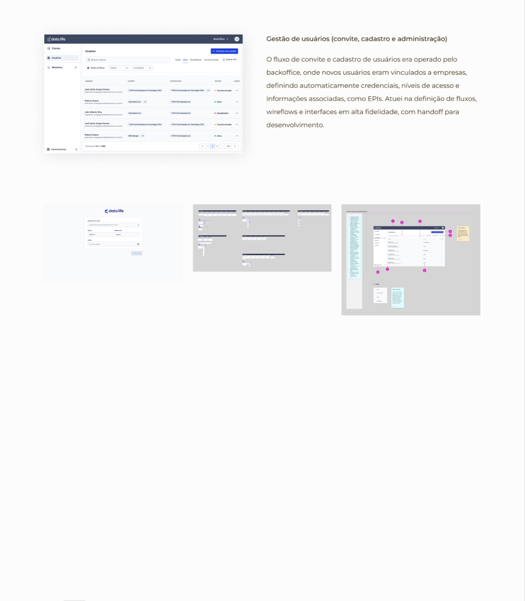

Sistema Interno Operacional
O Sistema Interno Operacional do Data Life apoiava a gestão de processos no setor de geração de energia, centralizando informações de ativos, pessoas, acessos e segurança do trabalho em diferentes módulos para usuários internos.
Atuei na estruturação da experiência a partir do entendimento dos processos reais, envolvendo mapeamento de fluxos, definição de regras de negócio, desenho de interfaces e prototipação para validação com stakeholders.
*Por questões de confidencialidade, entre em contato para saber detalhes do projeto.

Módulos do sistema: o produto era dividido em frentes distintas, todas desenhadas de ponta a ponta, do fluxo à interface final.
Gestão de usuários
Fluxo de convite e cadastro operado pelo backoffice, com vínculo automático a empresas, definição de credenciais, níveis de acesso e informações como EPIs.
Controle de Acesso
Centralizava os registros de entrada e saída de profissionais, dando visibilidade ao fluxo de pessoas no ambiente.
EPI
Controle de equipamentos de proteção por profissional, com registro de entregas, validades, histórico e assinatura digital na retirada.
Segurança
Análise e aprovação de documentos dos profissionais, permitindo validação ou reprovação diretamente no sistema.
Integração
Registro e rastreabilidade de eventos operacionais, permitindo que contratadas criassem eventos e registrassem presença ou ocorrência.
